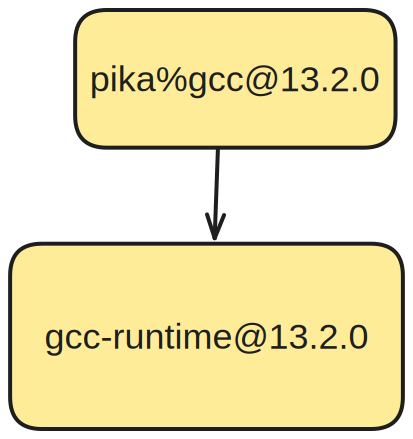
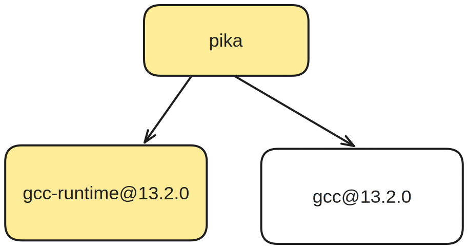
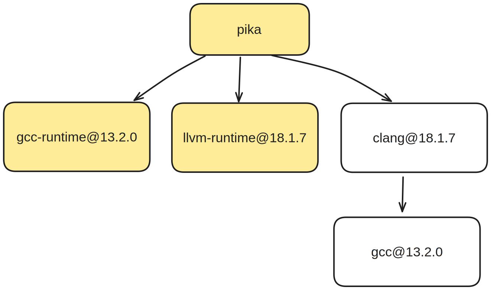

$ spack spec zlib
Input spec
--------------------------------
- zlib
Concretized
--------------------------------
- zlib@1.3.1 %gcc@13.2.0 ...
- ^gcc-runtime@13.2.0 %gcc@13.2.0 ...
[e] ^glibc@2.38 %gcc@13.2.0 ...
- ^gmake@4.4.1 %gcc@13.2.0 ...
gcc-runtime?libstdc++.so.6libgfortran.so.5libgcc_s.so.1libcglibc and muslos tag
os=ubuntu24.04^glibc@2.39
depends_on("glibc@2.31:")
Compiler is still a node attribute
Compiler mixing support with gcc-runtime
Compiler is an ordinary node itself
Express dependencies of compilers
clang injects a dependency on libstdc++.so

depends_on("cxx@2023:")python-venv? - py-click@8.1.7
- ^python@3.11.9
- ^ ...
- ^python-venv@1.0Spec highlighting
$ spack spec \
--fresh zlib
Input spec
--------------------------------
- zlib
Concretized
--------------------------------
- zlib@1.3.1%gcc@13.2.0+optimize+pic+shared build_system=makefile arch=linux-ubuntu23.10-zen2
- ^gcc-runtime@13.2.0%gcc@13.2.0 build_system=generic arch=linux-ubuntu23.10-zen2
[e] ^glibc@2.38%gcc@13.2.0 build_system=autotools arch=linux-ubuntu23.10-zen2
- ^gmake@4.4.1%gcc@13.2.0~guile build_system=generic arch=linux-ubuntu23.10-zen2
# Specify a version range with `@`
hdf5@1.10.1
# Specify a compiler toolchain with `%`
hdf5@1.10.1 %gcc@4.7.3
# Activate or deactivate boolean variants
hdf5@1.10.1 +szip ~fortran
# Set multi-valued variants, or reserved keywords
hdf5@1.10.1 build_type=Release target=x86_64_v4
class Hdf5(CMakePackage):
"""HDF5 is a data model, library, ... """
homepage = "https://portal.hdfgroup.org"
url = "https://.../hdf5-1.14.3.tar.gz"
version("1.14.2", sha256="4b4b4453251")
version("1.12.3", sha256="49d88f4494a")
variant("shared", default=True, description="...")
variant("mpi", default=True, description="...")
depends_on("mpi", when="+mpi")
(define-public hello
(package
(name "hello")
(version "2.10")
(source
(origin
(method url-fetch)
(uri (string-append "hello-" version ".tar.gz"))
(sha256 (base32 "0ssi1..."))))
(build-system gnu-build-system)
(synopsis "Hello, GNU world: An example GNU package")
(description "GNU Hello prints ...")
(home-page "https://www.gnu.org/software/hello/")
(license gpl3+)))
% Facts are specific "true" statements
node("lammps").
variant_set("laamps", "cuda", "false").
% Rules can derive additional facts
path(A, B) :- depends_on(A, B).
path(A, C) :- path(A, B), depends_on(B, C).
% Constraints say what cannot happen
:- path(A, B), path(B, A).
% Choice rules gives the solver freedom to choose
% from possible options
1 { version(Package, V)
: possible_version(Package, V) } 1
:- node(Package).
% Minimization defines the "optimal" solution
#minimize{
Weight,Package
: version_weight(Package, Weight),
node(Package)
}.
$ spack solve --timers hdf5
setup 6.676s
load 0.979s
ground 3.700s
solve 7.666s
total 19.897s
[ ... ]